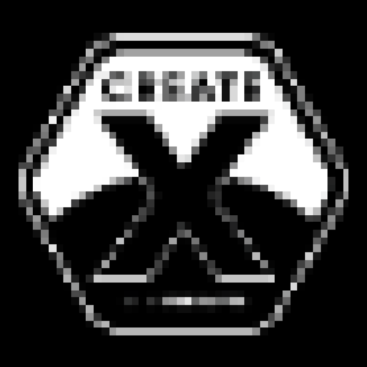
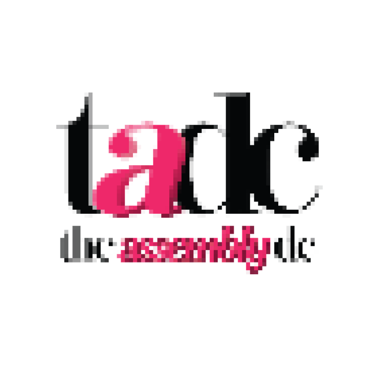
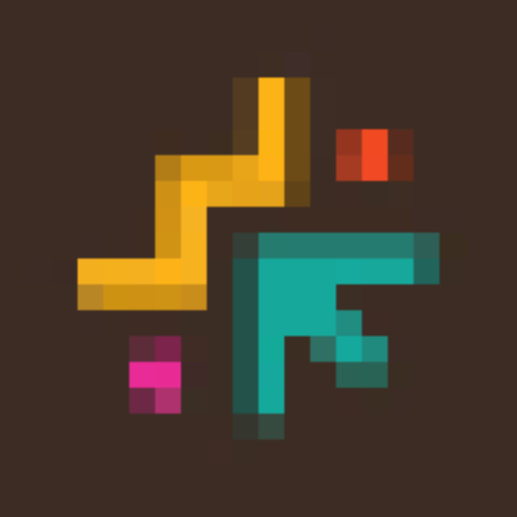
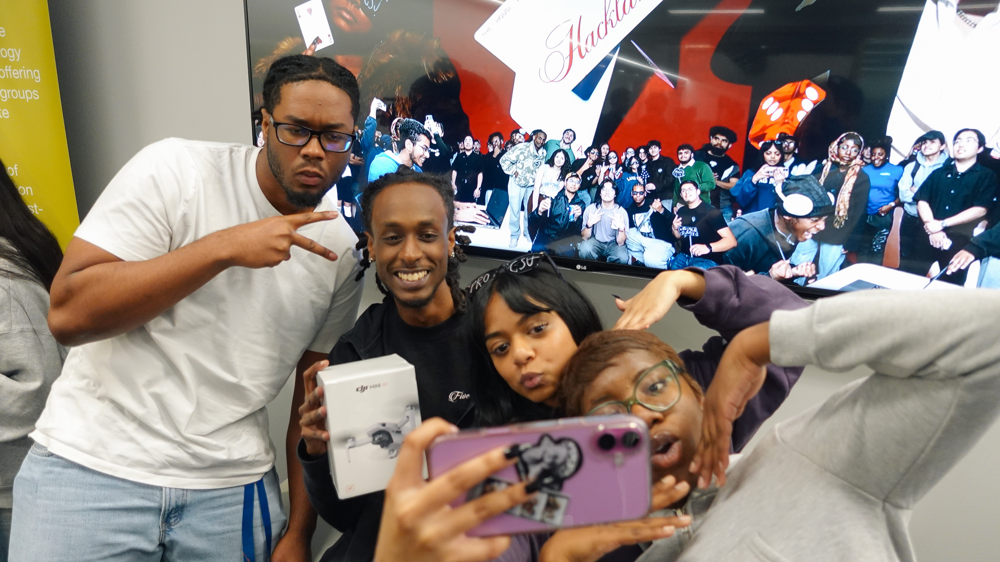

hi, i'm natasha.
i am building my career in product management.
case studies
TechRise App UI/UX Redesign
The app had real utility but students weren't using it. I ran the end-to-end process: user research, problem reframing, scope prioritization, and a full redesign that drove a 6x increase in active usage.

Trace Brand Identity
No logo, no typeface, no way to run ads or submit to the app store. I identified the three decisions blocking launch, drove alignment across an async team, and delivered a repeatable brand system in one week.
experience
Founder — progsu
Turned a dormant club into GSU's most prominent student tech org. Led Hacklanta, a student-run hackathon with 400+ attendees and $20K in sponsorships — owning the end-to-end marketing campaign from strategy to execution. Built a 0-to-1 incubation program that moved 14 student startups from idea to launch. Placed 40+ students into roles. Kept cross-functional teams aligned across every initiative.
CMO — Trace
Pre-launch marketing owner for a conversational reminders iOS app. Built the brand system from zero: logo, typeface, and product display format. Developed and managed the organic and paid Instagram strategy, oversaw UGC, and owned all launch creative. Operated as the sole designer and marketing decision-maker across an async team.

CREATE-X Pre-Accelerator — Georgia Tech
Selected for one of the top startup programs in the country. Building a 0 to 1 product using core PM methodology: user interviews, pain point synthesis, and assumption testing before writing a line of code.
UX/UI & Creative Design Apprentice — We Create Tech
Redesigned the flow and UI of TechRise Launchpad based on direct user feedback, driving a 100-student increase in active usage. Separately owned the brand identity work for We Create Tech, running multiple iterations with the team to align visuals with the organization's mission and voice until it was right. Work was featured in the Atlanta Journal-Constitution.

Event Planning & Experiential Production Intern — The Assembly DC
Own end-to-end production for live events. Drive all sponsor and vendor outreach from identification through close. Built the internal tracking system used across all events.
Student Ambassador — Adobe
On-campus product evangelist for Adobe Creative Cloud at a 50,000+ student campus. Drove adoption through workshops and partnerships, and served as a feedback channel between student users and Adobe.

CreativX Volunteer — We Create Tech
Guided high school students through hands-on exploration of coding, digital design, and tech career pathways via We Create Tech's CreativX Lab program. Helped redesign lessons based on direct student feedback, improving fit and ensuring students could complete work within the allotted time.
projects

blog
photos
 progteam.jpg
progteam.jpg
 progirls.jpg
progirls.jpg

winners.jpg
.png)